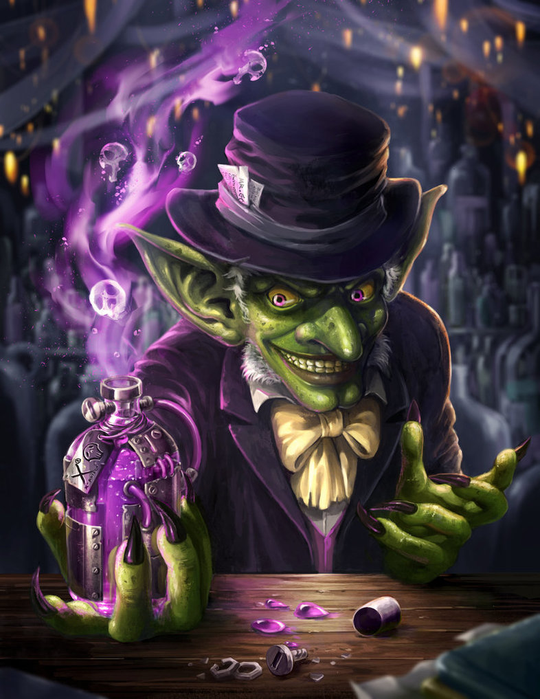

Code and slides available at Github: @millenc
Hi and welcome to team Gilded Rose. As you know, we are a small inn with a prime location in a prominent city ran by a friendly innkeeper named Allison. We also buy and sell only the finest goods.
Unfortunately, our goods are constantly degrading in quality as they approach their sell by date.
We have a system in place that updates our inventory for us. It was developed by a no-nonsense type named Leeroy, who has moved on to new adventures. Your task is to add the new feature to our system so that we can begin selling a new category of items.
First an introduction to our system:
Pretty simple, right? Well this is where it gets interesting:
Hold on! We also sell "special" items:
Here's our new requirement! We have recently signed a supplier of conjured items. This requires an update to our system:
Final words:
Feel free to make any changes to the UpdateQuality method and add any new code as long as everything still works correctly.
However, do not alter the Item class or Items property as those belong to the goblin in the corner who will insta-rage and one-shot you as he doesn't believe in shared code ownership (you can make the UpdateQuality method and Items property static if you like, we'll cover for you).
class GildedRose(object):
def __init__(self, items):
self.items = items
def update_quality(self):
for item in self.items:
if item.name != "Aged Brie" and item.name != "Backstage passes to a TAFKAL80ETC concert":
if item.quality > 0:
if item.name != "Sulfuras, Hand of Ragnaros":
item.quality = item.quality - 1
else:
if item.quality < 50:
item.quality = item.quality + 1
if item.name == "Backstage passes to a TAFKAL80ETC concert":
if item.sell_in < 11:
if item.quality < 50:
item.quality = item.quality + 1
if item.sell_in < 6:
if item.quality < 50:
item.quality = item.quality + 1
if item.name != "Sulfuras, Hand of Ragnaros":
item.sell_in = item.sell_in - 1
if item.sell_in < 0:
if item.name != "Aged Brie":
if item.name != "Backstage passes to a TAFKAL80ETC concert":
if item.quality > 0:
if item.name != "Sulfuras, Hand of Ragnaros":
item.quality = item.quality - 1
else:
item.quality = item.quality - item.quality
else:
if item.quality < 50:
item.quality = item.quality + 1
class Item:
def __init__(self, name, sell_in, quality):
self.name = name
self.sell_in = sell_in
self.quality = quality
def __repr__(self):
return "%s, %s, %s" % (self.name, self.sell_in, self.quality)
# -*- coding: utf-8 -*-
import unittest
from gilded_rose import Item, GildedRose
class GildedRoseTest(unittest.TestCase):
def test_foo(self):
items = [Item("foo", 0, 0)]
gilded_rose = GildedRose(items)
gilded_rose.update_quality()
self.assertEquals("fixme", items[0].name)
if __name__ == '__main__':
unittest.main()
The update_quality() method is a complete mess!
item.quality = item.quality - item.quality
We are going to refactor this code and add the new requirement using the following approach: